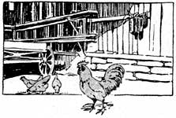
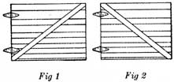

Reprinted by permission from Successful Farming, copyright 1927, Meredith Corporation. All rights reserved.
LEWIS WHITE, a Pulaski county, Indiana, farmer started giving more careful attention to his poultry flock some years ago and by continually keeping records on all his farm enterprises, he learned that the poultry was paying him better than any other part of the farm enterprise.
Better feeding came first, then better breeding, the flock was tested for bacillary white diarrhea, then better housing facilities were provided. Then the "experts" commenced to talk lights to increase feed consumption which would mean increased egg production. The Whites debated for three or four seasons whether or not they should put in electric lights. They were told that the increased production in a single year would pay for installation of the lights. Finally four neighbors including White went together and got. the "juice" out from the town two miles away.
The lights were turned on to both the hens and pullets the twenty-fifth of September. A little later White started to feeding an all-mash ration and while both this and the lights seem to have greatly increased egg production, White avers that the total egg receipts during October more than paid his share of the cost of getting the lights. He now believes that those who told him that he paid for lights whether he had them or not were telling the truth.-I. J. M., Ind.
Sometimes when concrete fails to set properly, we blame the cement, when perhaps the gravel is at fault.
Cement authorities tell us that gravel ought to be tested before it is used fur concrete work, to determine its suitability. The test they suggest is made as follows:
Take a fruit jar or other suitable receptacle, put in four inches of gravel or sand, and fill with water; shake well and let settle.
If more than one-fourth inch of fine silt or clay particles settle to the bottom the sample is considered unfit for good concrete construction. Probably about twenty-four hours are required for the settling.
Any farmer who wishes to test out his gravel to determine its suitability fur concrete manufacture, can easily run this simple test.-O. A. H., Ill.
COMMON honey bees have long been a source of study and cultivation. They are supposed to be of Asiatic origin, and were domesticated along the eastern shores of the Mediterranean at the dawn of history. They followed Roman civilization as it advanced into Europe. Early colonists brought them to America. In the long history of the bee, several races have been developed.
In 1860 the United States department of agriculture commenced a world-wide search for the best races of bees, and as a result we have four varieties, each excelling others in certain ways.
The German bees, black or brown, seem to have become better acclimated. They are the common wild bees of the country. They have a bad temper, and are not easy to handle. Occasionally they desert their combs.
A bit careless in some respects, they are an easy prey to the bee moth. They must be watched carefully, else caterpillars, moths and cocoons take possession of the comb. These bees are not the best honey gatherers. They make white comb honey.
The Italian bees are large and beautiful. They were imported m 1860, and have become quite popular. These bees are noted for their gentleness, and are very industrious. They will continue their work while the frame is lifted, and the queen can be found without any difficulty.
The Italian bees resist the attack of the bee moth. In the colder parts of the country they do not winter very well. They are better honey gatherers than the German bee.
The gentlest and most beautiful of all bees are the Carniolans. In color they are ashy gray, with silvery white hairs. In 1884 these bees were imported from Carniola, an Alpine province. They withstand the winter better than any other race. No bees swarm so successively. This is clue, it is said, to the warm summers. Their honey is very white. These bees are very prolific.
THOSE parts of the garden on which there may be some trash remaining, where the garden was not fall plowed, might well be burned over. This will kill enormous numbers of insects that attempt to hibernate in trash, weed, etc., that may be in and around the garden.
THE sagging of doors with braces set at different angles and the advantage of the tensile strength of wood over the compression strength was shown in some recent tests conducted by the Iowa state college.
The popular opinion is that gate No. 1 would stand the greatest strain. Gate No. 2 looks like it would pull loose and sag more easily.
A weight of 700 pounds was hung at the outer corner of the gates, which were hinged well up from the floor, for a forty-hour period. At the end of that time gate No. 1 had sagged three-eighths of an inch; gate No. 2 had not sagged enough that it could be measured.
The weight was then increased to 1,100 pounds. Under this load gate No. 1 sagged three-fourths of an inch and gate No. 2 sagged one-half inch, still showing the advantage of the brace in the position of the No. 2 gate.
It was pointed out that for a door that received considerable abuse, so that the nails would be likely to work loose, the brace in No. 1 would probably be better.-R. E. B., Iowa.
Casters on the woodbox turn hard work into play for the youngsters.
The next time a recipe calls for sour milk and there is none available, try adding a teaspoonful of vinegar to a cupful of sweet milk. The result will be the same as if sour mill: had been used.
With part of a snap fastener sewed on your apron belt and the other part on your stove holder, there will be no mislaid holder just when it is most needed.
Right! Turn over a new leaf. You need not. mention to anyone the number of the page.
When a cake burns at the bottom, as it sometimes will, let it cool and then scrape off the burnt portion with a nutmeg grater or other small grater.
Those who find it necessary to baste things before sewing will find it much quicker to use pins, as there will be no basting threads to remove when the garment is finished.-Mrs. M. V. S.
|
 |
 |
|